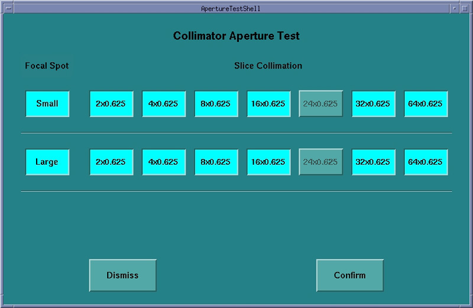
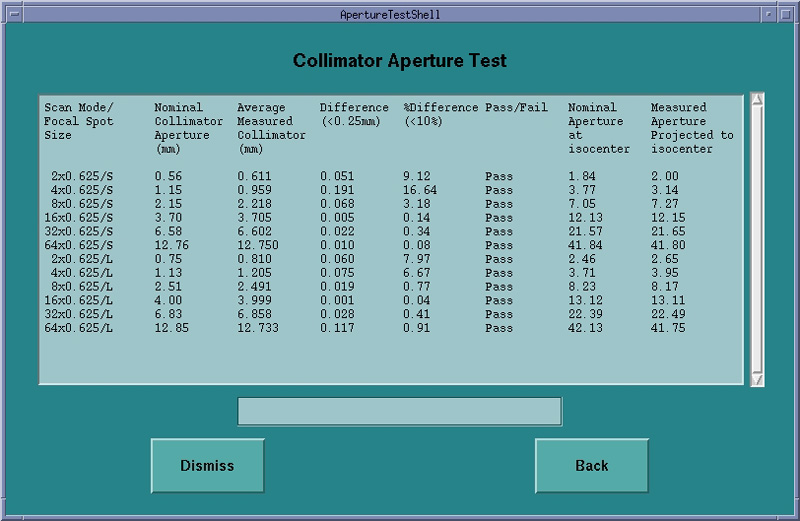
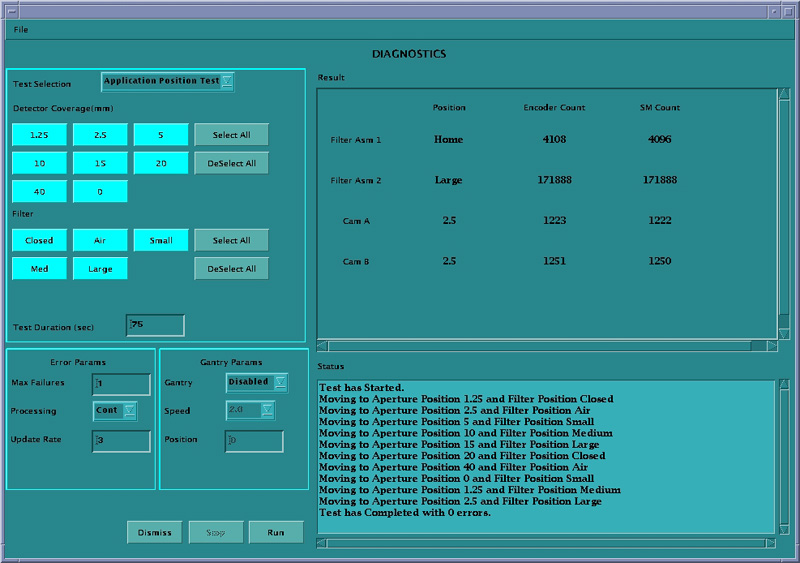
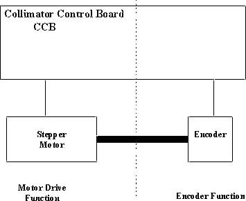
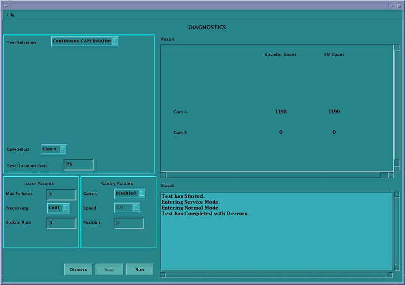
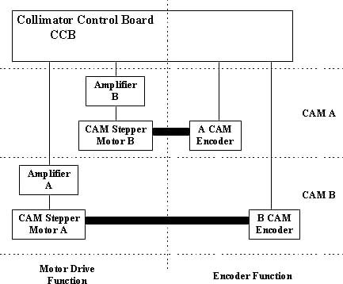
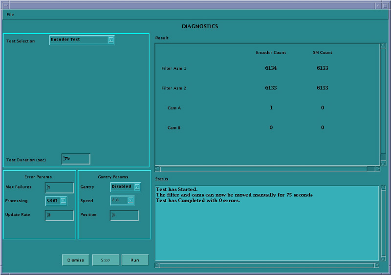

Operating Documentation
Direction 5193575-800, Rev# 5
LightSpeed 7.X Service Information - Adv
Operating Documentation |
| Last Revised: | 11 November 2005 |
The Collimator Functional Diagnostics and Aperture tests are accessed for the Common Service Desktop under the Diagnostics tab. The Collimator Aperture test and Collimator Functional Diagnostics are separate tests and are described as follows.
The user is presented with all available aperture selections for both small and large focal spots. The default is all ON or selected. The user has the ability to select/deselect all available modes. The various cam positions are recorded and can be used to evaluate the beam aperture during scanning. This test involves performing a scan at each aperture and comparing the average collimator aperture against a nominal aperture for that scan mode. All data collections and calculations are performed with Z-Axis Tracking On. For this reason, if Collimator Calibration has not been performed, or the files are not available, none of the buttons are selectable. The test results are recorded into log file, /usr/g/service/log/collimator_aperture_test.log.
Illustration 1: Collimator Aperture Test GUI

The average collimator aperture shall be compared to the Nominal collimator aperture. The Tech Ref manual states that the FWHM of the Dose Profile has a “maximum deviation” of ±30% or 1.5 mm, whichever is greater, and an “expected deviation” of ±10% or 0.5 mm, whichever is larger [Quality Assurance chapter]. This is measured at iso center. At the collimator, this would correspond to an “expected deviation” of ±10% or 0.15mm, whichever is larger. The current Collimator Calibration design has an internal check on the target collimator aperture of 0.25 mm versus a nominal aperture. For this Collimator Aperture Test, the test shall Pass if the difference between the measured aperture and the nominal aperture is less than ±10% or 0.25 mm, whichever is larger. This will ensure that the measured aperture is within the designed limits.
The "at isocenter" values are calculated. This is an approximation of the Full Width Half Max (FWHM) value or beam width at ISO center. For Dose Profile this report should match Polaroid file measurements.
Illustration 2: Collimator Aperture Test Results

This test positions the Cams and filter, to the selected positions, for the entered test duration.
Illustration 3: Collimator Functional Application Position Test GUI

Test runs in continuous modes, which help detect intermittent operating conditions.
Means to visually validate the aperture and filter positions.
Functional validation of the operation of the collimator.
Look for highlighted fields that indicate the cam or filter did not make it to position. Check the log for additional information, when this occurs.
Watch for finger pinch hazards.
Attempt to move the filter and/or cams, when test is complete, and verify motor has a lot of holding torque.
This test moves the filter from one extreme to another for the entered test duration.
Illustration 4: Collimator Functional Continuous Filter Position Test GUI

Verify no mechanical binding is present.
Manual mode for signal tracing.
Check for motion when errors indicate no motion sensed.
If the display does not indicate changes in the encoder count, visually check the filter for motion:
If filter is moving, failure is in the encode circuit.
If filter is not moving, failure is in the drive circuit.
Watch for finger pinch hazards.
The filter drive can be divided into two functions:
Motor Drive (Positioning driver).
Encoder (Position feedback).
Illustration 5: Collimator Filter Position

This test rotates the selected CAM for the entered test duration.
Illustration 6: Collimator Functional Continuous CAM Rotation GUI

Verify no mechanical binding is present.
Manual mode for signal tracing.
If the display does not indicate changes in the encoder count, visually check the CAM for motion.
Listen for mechanical vibration or binding.
Illustration 7: Collimator CAM Rotation

Watch for finger pinch hazards.
CAM A and B circuitry is the same.
CAM operation can be divided into two functions:
Motor and drive
Encoder
Read and displays the CAM and filter encoder counts while the devices are positioned by hand.
Illustration 8: Collimator Functional Encoder Test GUI

Confirm an encoder problem.
Verify encoder reading changes once the cams or filters are moved.
Watch for finger pinch hazards.
Test reduces the cam holding torque to allow the cams to be rotated by hand.
Cams are 2000 counts per rotation.
Filter is 1000 counts per rotation.
Cam encoder requires the whole collimator assembly to be replaced.
Filter housing assembly is a FRU.